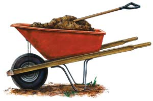

LEE REICH
Bulk compost is cheaper and generally better than you can buy in plastic bags. But it’s important to do a little homework before buying, which will help ensure that you get high-quality compost.